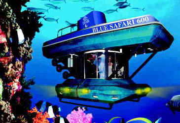

There are a number of places to visit during your stay on the island. Apart from the many beach resorts with their sandy white beaches and blue lagoon, there are other "greener" sites that you might find interesting. The Black River Gorges, Macabee Forest and Yemen are regions, which you might discover on foot or by car. Trou aux Cerfs (an extinct volcanic crater), Chamarel (with its 7 coloured earth), Ile aux Aigrettes (an island of the South East Coast which is a natural reserve) are among the many sites you can experience during your stay in Mauritius.
There are also a number of museums, fortifications, churches, galleries, colonial houses that are opened to the public. These places are a heritage of our rich colonial culture and history. Moreover religious festivals, especially Indian festivals are very colourful. This is a good way to experience Eastern culture without stepping out of Mauritius
The north of the island is best known for its white sandy beaches and calm lagoons. As such it has the biggest number of beach resorts and is the most developed part of the Mauritian coastline.
The following are the most popular beaches in the North of Mauritius:
- Anse La Raie
- Bain Boeuf
- Calodyne
- Cap Malheureux
- Grande Gaube
- Grand Bay public beach
- La Cuvette
- Mont Choisy
- Péreybère
- Point Aux Piment
- Pointe Aux Canonniers
- Poudre D’or
- Trou aux Biches
The North is famous for the plenty activities on its beaches offering water sports such as waterskiing, windsurfing, sailing, deep sea fishing, and parasailing. In the evenings you will get to enjoy amazing views on the sunset, and also selection of trendy bars and restaurants situated with close proximity to the beach.

Grand Bay is one of Mauritius most touristic villages with beautiful beaches and crystal clear lagoon. Also, Grand bay is famous for the many water activities available there or departing from its bay such as: water skiing, windsurfing, yachting, catamaran cruises, deep sea fishing and sailing trips.
Mauritius hotels are renown all over the world for the excellence in service and hospitality. The gently curving beige sand beach, safe swimming, shady trees and gentle sea breezes all contribute to the laid-back Mauritian style.
There are also a number of fully equipped bungalows, studios that are available for rent in these areas. Prices vary depending on the location and the services offered. These self-catering lodgings also sometimes offer full room service upon request.

The Botanic Garden, formally known as Sir Seewoosagur Botanic Garden, is one of the most visited attractions in Mauritius. The garden is located in the proximity of Port-Louis in the district of Pamplemousse.
The botanical garden was initially opened as a private garden by the French governor of Mauritius nearly 300 years ago, later to become the national botanical garden of Mauritius.
The botanical garden stretches over endless acres of land and it may take you more than a week to cover the whole garden. It is populated with more than 650 varieties of plants among which are the famous Baobabs, the Palmier Bouteille, the ineluctable Giant Water Lilies, dozens of medicinal plants, a large spice garden and many more.
One of the main attractions of the botanical garden is the 85 different varieties of palm trees brought from different corners of the world. Other indigenous species of plants are also exhibited here.
The Aapravasi Ghat World Heritage Site, remains of an Immigration Depot built in 1849, is located in Port-Louis, the capital of Mauritius, where the modern indentured labour diaspora began.
The Aapravasi Ghat World Heritage Site was inscribed in 2006 under criteria VI as:
“The first site chosen by the British Government in 1834 for the great experiment in the use of indentured rather than slave Labour, is strongly associated with memories of almost half a million indentured labourers moving from India to Mauritius to work on sugarcane plantations or to be transshipped to other parts of the World.”
Shopping in Mauritius is an experience in itself. You can experience the Mauritian buzz in the Central Market which is located in the Mauritian capital of Port Louis near the harbor on Farquhar Street and is a vibrant spot. This market is very energetic market with stalls piled high with tropical fruits and vegetables and also mountains of spices. This place is always crowded with locals and tourists. The market is open every day, from 6am, and it’s a good idea to go early so that you avoid the hot atmosphere and bad smell in the market.
You can experience the local life in the traditional Port-Louis Central Market. Everything can be found in there from vegetables to meat to clothes. It is well represented in terms of the Mauritian population with Indians, Chinese and Africans going about their business. During the holiday times in December it is practically impossible to walk around because of the number of people hovering about but the beauty of the market is that it has a festive atmosphere all year long.
Shopping in Mauritius is an experience in itself. You can experience the Mauritian buzz in the Central Market which is located in the Mauritian capital of Port Louis near the harbor on Farquhar Street and is a vibrant spot. This market is very energetic market with stalls piled high with tropical fruits and vegetables and also mountains of spices. This place is always crowded with locals and tourists. The market is open every day, from 6am, and it’s a good idea to go early so that you avoid the hot atmosphere and bad smell in the market.
You can experience the local life in the traditional Port-Louis Central Market. Everything can be found in there from vegetables to meat to clothes. It is well represented in terms of the Mauritian population with Indians, Chinese and Africans going about their business. During the holiday times in December it is practically impossible to walk around because of the number of people hovering about but the beauty of the market is that it has a festive atmosphere all year long.
Port Louis (por loo-ee), the island's capital and largest city, can feel like a kaleidoscope of countries and cultures, with flashes of India, Africa, Europe, China and the Middle East. Unless you've essential business to transact here, or unless you're in the country for a prolonged visit, there aren't that many reasons to come – there are numerous other day excursions that we'd rank above Port Louis. But if you are here, it can be a good place to take the pulse of the country and to get an alternative slant on the island's rarefied world of resorts and private beaches. Most interest lies amid the bustle and chaos of the streets, the tangle of ethnic quarters and some wonderfully preserved colonial buildings. Apart from Le Caudan Waterfront, it all shuts down after dark when countless day commuters rumble out of town at sunset en route to their homes on the Central Plateau.
Ebene City (formerly known simply as Ebene) is a city on the island nation of Mauritius, 15 km (nine miles) south of the capital, Port Louis. Construction began in November, 2001, with the city being promoted as a new information technology hub for Mauritius and as a link between African and Asian markets. As a result, it is also referred to as Ebene Cybercity or Cybercity.
Ebene is a cable landing point of the SAFE high-speed submarine communications cable beween South Africa and Malaysia. It is also the home of AfriNIC, the Regional Internet Registry for Africa, and other IT companies.

Whether it’s shopping, food, entertainment or a fun family outing you’re after, Centre Commercial Phoenix is the perfect venue to fulfil your needs. Newly extended to include an additional 37 retail outlets, the mall now boasts more than 100 shops, inviting you to a more glorious shopping experience. From leading local retailers to world-famous international brands, and delicious eateries featuring delicacies from around the world, Centre Commercial Phoenix is the one-stop destination for your shopping indulgences and excellent food.
Shops are available for:
- HYPERMARKET
- FASHION
- ACCESSORIES & JEWELLERY
- FOOTWEAR
- SPORTS
- KIDS
- HOME & DECO
- HEALTH & BEAUTY
- ELECTRONICS & COMPUTERS
As wonderful and whimsical as the name sounds, Flic en Flac isn't quite the picture of paradise you saw on your travel agent's website. The area's moniker is thought to be a corruption of the old Dutch name Fried Landt Flaak (meaning 'Free and Flat Land'); the endless acreage of sandy shoreline was undoubtedly striking when explorers first arrived in the 18th century. Today, the public beach is peppered with weeping filao trees, and the area is exploding with apartment complexes, souvenir shops, moneychangers and pinchpenny holiday rentals. Although development in Flic en Flac has gone the way of Grand Baie, it's still about a dozen clubs and restaurants short of attracting a party crowd in earnest.
All is not lost, however; the beach is still one of the best in Mauritius and if you stay at any of the high-end resorts in the Wolmar area outside the town, you'll uncover some stellar stretches of sand, glorious diving and a handful of palate-pleasing restaurants.
“Welcome to Casela Nature & Leisure Park, 14 hectares offering a home to 1,500 birds, zebras, giant tortoises, monkeys, lions and many other animals. Go for a ride in the nature by Quad, Buggy, Segway or try the only Via Ferrata in Mauritius. Feel the thrill of the longest zip line circuit in the Indian Ocean including hanging bridges or venture the hidden waterfalls of up to 20m height during a Canyoning tour.
The Safari tour gives the opportunity to feed zebras and ostriches. Seize the once in a life-time opportunity to goor a Walk with Lions and get your picture taken with them. Nature lovers will enjoy a visit in the endemic dry forest and children will have fun at the petting farm, the jumping castle or at our fishing ponds.
Locals like to wax nostalgic about Tamarin Beach, and in many ways this sandy cove still feels like a throwback to earlier times – especially since the centrally located Tamarin Hotel looks like it hasn't been renovated since Jaws was in cinemas.
Once upon a time the area was known as Santosha Bay (you'll still find the word 'Santosha' scribbled on a few buildings in faded paint) and offered wave hunters some of the best surfing on the planet. In fact, before the bay earned the name Santosha, locals refused to give the beach a moniker because they didn't want outsiders to discover their cache of surfable seas!
Today the waves and currents have changed and surfing at Le Morne has really taken off, but Tamarin – unmarred by high-walled resort compounds – remains a popular place and during the evening live jazz tunes waft through the air.
The walk between Tamarin Beach and southern Wolmar is very scenic and not accessible by car (women are advised not to do it alone).
The large swath of beach-fringed land between Flic en Flac and Le Morne is known to most Mauritians as Rivière Noire (Black River). One of the island's last coastal areas to witness development, this constellation of townships has grown by leaps and bounds over the last few years as unsightly salt flats morph into stylish housing projects for South African expats, and traditional hunting grounds get reimagined as scenic zoos and cycling paths. Despite the sudden appearance of modern structures, Black River is a great place to base yourself for a more active and authentic experience. Sensational hiking, scenic shorelines, top-notch fishing and interesting historical relics are all within arm's reach.
Kite surfers, paragliders and deep-sea fishermen flock to windswept La Morne, a small village on the southwest side of Mauritius. Le Morne Brabant Mountain, a dramatic basaltic rock peak dotted with caves that once harbored runaway slaves, presides over luxury resorts and a wide beach widely regarded as the best on the island. Throw in a shimmering turquoise lagoon and gorgeous sunsets and calling the town "paradise" doesn't seem like a cliché.
The Black River Gorges is worth visiting for all trekkers, as well as for the pure nature lovers and bird-watchers.
The Black River Gorges is the largest national park in Mauritius. Famous for its waterfalls, vistas and hiking, the gorge is in the central highlands, making it cooler than much of the island.
The "Black River Gorges" National park is a national park in the hilly south-western part of Mauritius. The park extends over an area of 6,754 hectares. With the help of the guides, you will discover Mauritius' natural heritage in this unique area which is also the location of one of the rarest forests in the world. It harbors about 311 species of native and endemic flowering plants and 9 species of birds, which are found only in Mauritius.
This hike will take you into the heart of the indigenous forest with many panoramic views. You will also get to a river where you can have a swim.
During the trip you will learn about the natives, the vegetation as well as on the endemic and exotic bird life.
The views you will encounter during this hike are breathtaking: A wide, beautiful gorge (canyon) curving dramatically down between a series of mountains. Beautiful waterfall scampering down the hillside with a range of mountains behind them and many more.
The park protects most of the island's remaining rainforest. Many endemic plants and animals can be found in the park, including the Mauritian flying fox and all of the island's endemic birds: Mauritius kestrel, pink pigeon, Mauritius parakeet, Mauritius cuckoo-shrike, Mauritius bulbul, Mauritius olive white-eye, Mauritius grey white-eye and the Mauritius fody.
The “seven-coloured earth” of Chamarel is a geological curiosity and a major tourist attraction of Mauritius. This is a small (7500 m2) area of strikingly bare landscape located within a large, dense forest. The earth is particularly unusual; created by volcanic rocks that cooled at different temperatures, the earth form beautiful patterns of colour in the exposed hillsides. The rocks were pulverized into sands with various shades of red, brown, grey, and purple. Since the earth was first exposed, rains had carved beautiful patterns of many colours into the hillside. When visiting the park, you will be able to walk between the many sand dunes, along trails and see this unique sight. Also, there is a small petting farm where you can see and pet Giant Turtles which found their home at the park.
Ganga Talao or Grand Bassin is a crater lake situated in a secluded mountain area in the district of Savanne, deep in the heart of Mauritius. It is about 1800 feet above sea level. It is considered the most sacred Hindu place in Mauritius. There is a temple dedicated to Lord Shiva and other Gods including Hanuman, Lakshmi, and others along the Grand Bassin. During Shivaratri, many pilgrims in Mauritius walk bare feet from their homes to the lake.
About 1km west of central Curepipe, the Trou aux Cerfs is a dormant volcanic crater some 100m deep and 1km in circumference. The bowl is heavily wooded and from the road around the rim – a favourite spot for joggers and walkers – you get lovely views of the plateau. There are benches for rest and reflection, and a radar station for keeping an electronic eye on cyclone activity.
Ile aux Aigrettes is a small (27 ha) island situated in the Mahebourg Bay, about 850 m off the south-east coast of Mauritius. Unlike the mainland which is of volcanic origin, Ile aux Aigrettes is made up of coralline limestone. It is home to the last remnants of dry coastal forest, once found around most of Mauritius.
Like the mainland, Ile aux Aigrettes was affected by tree logging and land clearance, and the introduction of exotic animal and plant species almost destroyed the native fauna and flora. In 1965 the island was declared a nature reserve and our intense conservation efforts have resulted in the restoration of the forest and reintroduction of rare species that had long since disappeared from the island.lkers – you get lovely views of the plateau. There are benches for rest and reflection, and a radar station for keeping an electronic eye on cyclone activity.
The Domaine du Chasseur allows nature-lovers to wander its 30km of nature trails through the 1 000 hectares of natural landscape. The trails run through beautiful forests of indigenous trees and spice plants. You might spot the Javan deer, which is reared here. Wild boars, monkeys, hares and many local bird species also inhabit this reserve. Choose to walk the trails, test your fitness on a mountain bike or pick up the pace on a quad bike to explore the pathways and waterfalls before eating in the rustic restaurant. The restaurant at Domaine du Chasseur has beautiful views towards the ocean and specialises in traditional game dishes.
On the Eastern side of Mauritius you will discover kilometres of long white sandy beaches from Belle Mare beach to Trou D’eau Douce. Roche Noires is a magnificent beach and quiet area for a nice bath which extend to Poste Lafayette beach. Palmar Beach is also a well recommended area. Trou D’eau Douce is also the meeting point where usually the visitors take the boat to visit the neighbouring island of Ile aux Cerfs which offers white sandy palm beaches and a clear shallow lagoon. Ile aux Cerfs is a spectacular and relaxing place. Blue Bay exactly located in the Southeastern part of the island not far from the International Airport offers a nice bathing area with white sandy beaches and amenities for picnics.